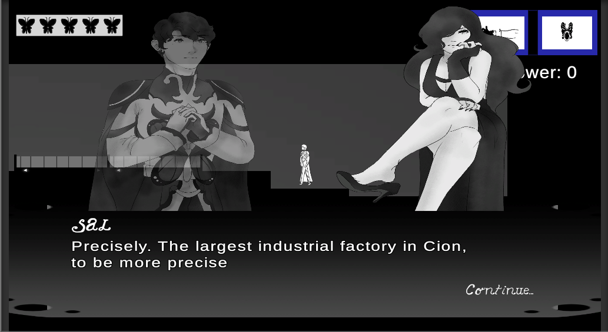
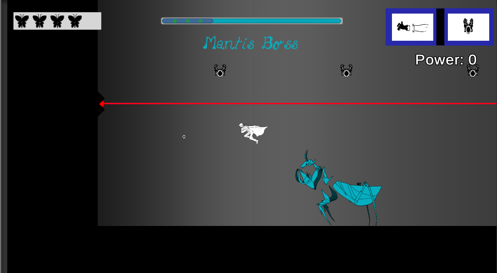

Paracelsys
Paracelsys is a platformer made from Unity that focuses on exploration and plot. The player is given two sets of skills to alternate between (magical and mechanical) and must master both of them to fully complete the game. I was responsible for level design, UI, and the dialogue system. We went through several milestones: first playable, vertical slice, alpha, beta, and gold master. I was also under the tutelage of an industry veteran from Telltale Games.
In this clip, I am playing in the more brightly colored magic-themed world. I am able to shoot a ball of gas that fades in power the farther it goes. I can also teleport and double jump, and it makes movement in this game feel fun and dynamic. At the end of clip, you can see another character waiting for me, and a dialogue box appears.
The game was a lot of fun to make, as it challenged me to create open-ended, expansive levels that have to be cleared by both skillsets. I looked through levels from Hollow Knight, Dead Cells, Celeste, etc. to find inspiration. Balancing character statistics was something new to me as well. This game was a great way to introduce me to the intricacies of good game design and I can't wait to apply the lessons I learned in a professional studio!
